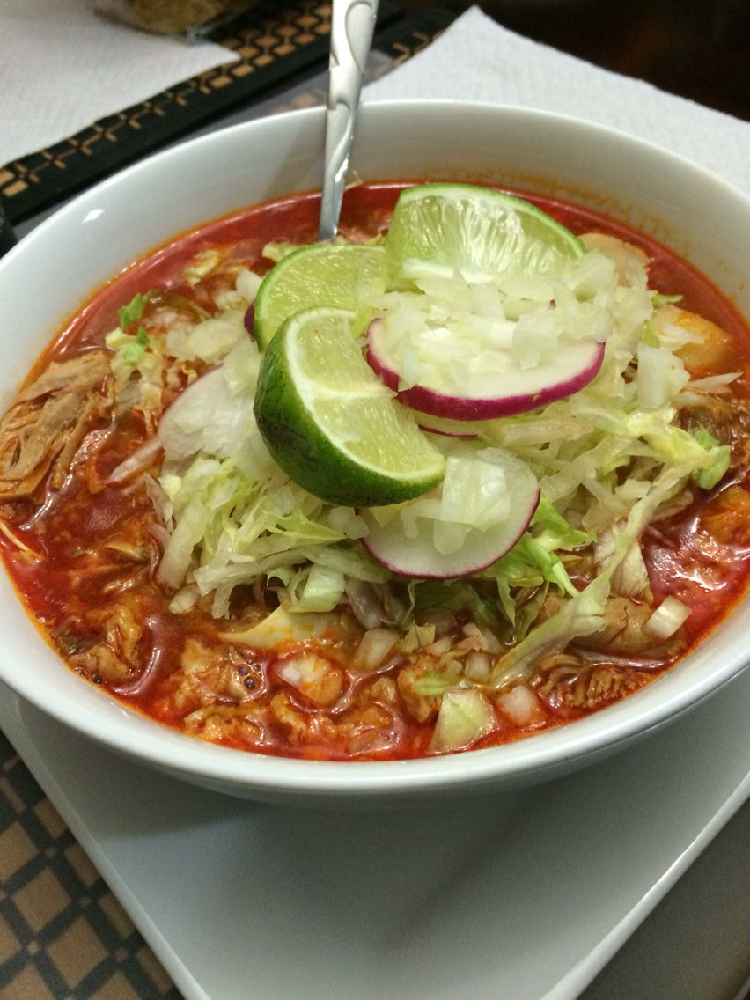

Instrucciones
Cocina el pozole: En una olla grande, hierve el maíz con la carne, la cebolla y el ajo con sal por 2-3 horas, hasta que la carne esté suave y el maíz "floree" (se abra). Deshebra la carne.
Haz la salsa: Hierve los chiles, licúalos con un poco de cebolla, ajo, orégano y comino. Cuela la salsa.
Integra y sirve: Vierte la salsa sobre el caldo con el maíz y la carne. Cocina 20 minutos más. Sirve caliente con los acompañamientos y tostadas.
